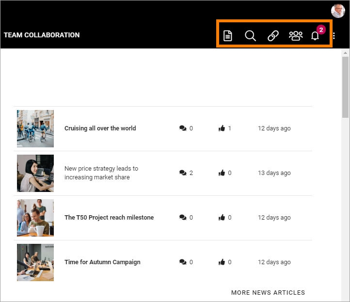

Header settings for the Business Profile¶
The following settings are avaible for the Header:

General¶
Under General you can set Background Color for the Header, and Icon Color. In this example, the Background Color is Black, and the Icon Color is White:

The Icon Color setting apply to the icons to the right.
Logo¶
Use these settings for the logo in the Heading.
The following settings are available:
- Url: Add the Url to the Logo Image here (or use the Media Picker, see below).
- ADD IMAGE: To use the Media Picker to select Logo Image, click this link. See this page for information on how to use the Media Picker: The Media Picker
- Padding: Use these settings to add som padding around the Logo, if needed.
Action Menu¶
The Action Menu is this part of the Heading:
You can use these settings:

- Components: This column lists the Components that can be displayed in the Action Menu. “My Teams” and “Notification Panel” has additional settings, see below.
- Display: You can decide which Components to display, and how: “Pinned” - is default, an Icon will be displayed; “Hidden” - if you don’t want the Component to be available; “Menu” - if you want to display the Component in the menu (the three standing dots) instead as an Icon.
- Order: You can decide the order for the Components you’re displaying, from left to right.
My Teams - additional settings¶
Click the cog wheel to set additional settings för My Teams. Here’s what you can set: